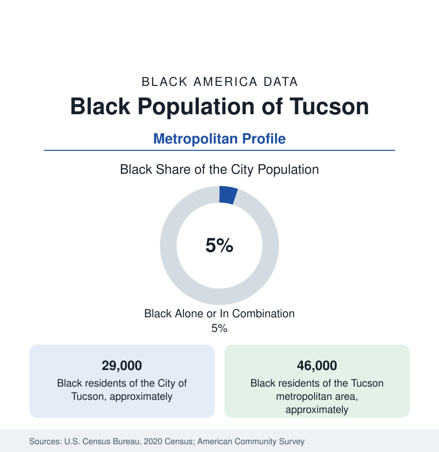

Black Cities
Black Tucson: The Old Pueblo's South Side and the Air Base
Tucson holds about 29,000 Black residents in the city and 46,000 across the metro — a desert community built by the railroad, the university, and Davis-Monthan. The census profile.

Tucson holds about 29,000 Black residents within the city — Black alone or in combination, about one resident in twenty in the Old Pueblo — and about 46,000 across the metropolitan area. The desert city's Black community is older than its Anglo growth: Black soldiers and railroad men of the territorial era, the Dunbar School's segregated classrooms, and a South Side geography that the modern data — the university, the air base, and the retiree economy around them — still organize.
The South Side, Dunbar Spring, and A Mountain's Shadow
The geography gathers south and west of downtown: the South Park and Las Vistas neighborhoods of the South Side (the community's postwar heartland along South Park Avenue — its churches, the Dunbar Coalition's ground, and the former Dunbar School, the city's segregated Black elementary, converted to the Dunbar Pavilion cultural center in the community's own preservation victory), the Dunbar Spring neighborhood by the old railroad wards northwest of the center (named for the poet by the families who settled it), and the Sugar Hill district north of Grant — the mid-century professional neighborhood, its name a Harlem borrow — with the modern spread running to the southwest subdivisions and the Rita Ranch growth near the base. The institutional map adds the Tucson Black chamber and cultural organizations, the Buffalo Soldiers museum chapter of the border forts' memory (Fort Huachuca, the Buffalo Soldiers' own post, an hour south), and the University of Arizona's Black alumni and student institutions at the city's academic core.
The University, the Base, and the Raytheon Line
The employment data stack the desert economy's anchors: the University of Arizona (the city's research giant — its Black faculty, staff, and student files a standing ledger in a state whose flagship diversity data are publicly tracked), Davis-Monthan Air Force Base in the southeast (the A-10's home and the Boneyard's keeper — its Black airmen and civilians in the garrison pattern, its retirees settling the east and south sides), Raytheon's missile works in the south valley (the region's largest private employer, its engineers and technicians a professional tier), the healthcare systems (Banner's university medical center), and the government payrolls of the county seat. The indicators reflect a small-share community in a low-wage metro: incomes near the city's modest band, the military-university tiers lifting the professional data, poverty in the South Side's legacy tracts, and homeownership in Sugar Hill's and the southwest's subdivisions — with the heat file (the desert city's climate data, its cooling-access equity studies centered on the older southern neighborhoods' tree canopy) as the newest overlay on the housing numbers.
The Borderlands' Black Thread
Tucson's Black history threads the borderlands record: the Black regulars of the frontier forts, the Southern Pacific's porter and service workforce of the railroad era, the civil-rights file of the 1960s (the Tucson movement's school and public-accommodations campaigns in the standard Southwestern pattern — won in a state whose politics the Goldwater era complicates in the archive), and the political data of the small-share profile: representation built through coalition in the city council's ward system, the South Side's wards returning the community's voices in the modern record. The cultural ledger carries the Dunbar Pavilion's programming, the Juneteenth festival's long tenure, the gospel scene of the South Park churches, and Paul Dunbar's namesake ground as the literary thread — the poet never lived here, but the families who named their school and neighborhood for him made the connection the city's own.
Change and the Estimates
The estimates show the metro growing on retirees, the university, and the defense-tech corridor — its Black population growing in count at the southwest and Rita Ranch edges, its share steady near a twentieth — with the current files running through the base's mission transitions, the south valley's industrial growth, the Dunbar corridor's reinvestment, and the water-and-heat planning that frames every Tucson number now. The observatory-and-optics industry (the university's space-and-lens complex) adds the newest professional tier to the series.
Reading the Tucson Numbers
Tucson's 46,000 metro Black residents are the desert profile: a twentieth of the Old Pueblo, holding a schoolhouse they turned into a cultural pavilion, a neighborhood named for a poet, and ground in the shade of A Mountain since the railroad era. Small shares in this atlas keep proving the same point — the depth of a community is not in its percentage.
More in Black Cities
Black Atlanta: Population, Distribution, and Growth of a Black Metropolis
Metro Atlanta holds more than two million Black residents — roughly one in three, second only to New York. The suburban distribution, migration history, and composition of Black Atlanta in the census data.
Black New York: The Largest Black Population in America
The New York metropolitan area holds about 3.4 million Black residents — more than any metro in the nation — and the city itself about two million. The census profile.
Black Washington: The District and the Metro
The Washington metro holds about 1.6 million Black residents, and the District itself — long a majority-Black city — now records a Black share near 41 percent. The census profile.
Source: U.S. Census Bureau, 2020 Census; American Community Survey; Population Estimates Program.